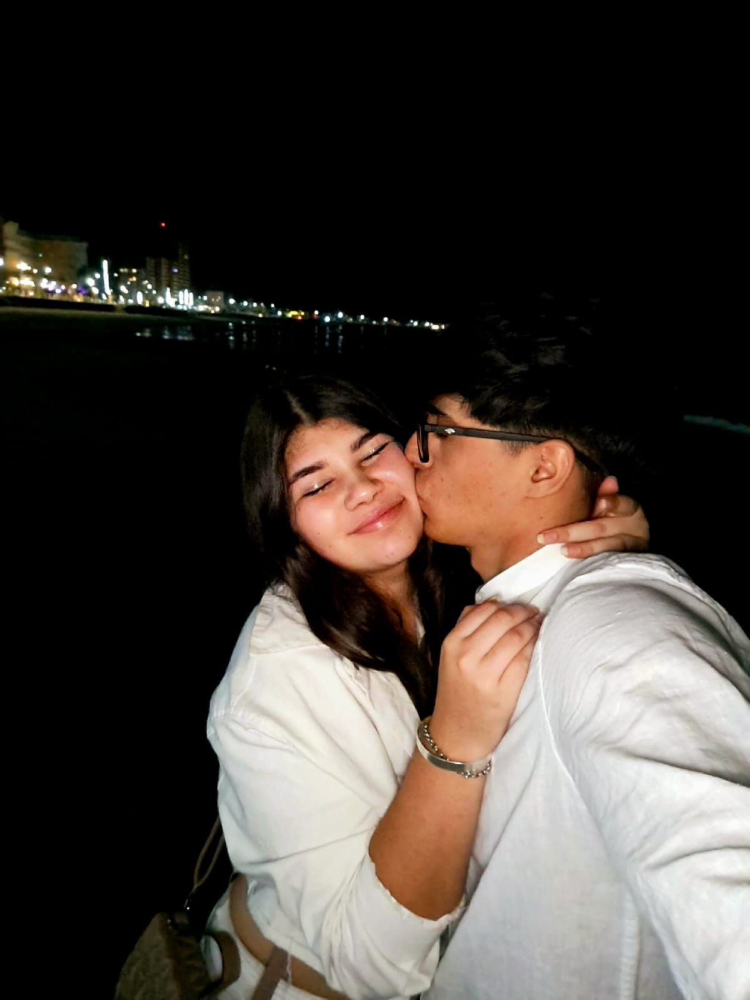

💌 Tengo algo para vos...
Presioná cualquier tecla o tocá la pantalla para comenzar ❤️
❤️ Magdalena… ¿te gustaría ser mi san Valentín este 14 de febrero? ❤️
SI
NO
💘 Sabía que ibas a decir que sí 😌
Ahora oficialmente sos mi San Valentín 💘
💘 Te amo mucho 💘
